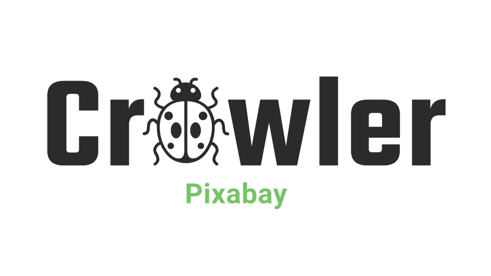

Codes/Datasets
CoCA
Common Category Aggregation dataset is a versatile dataset with very fine annotations. It consists of 80 categories with 1295 images, covering everyday indoor and outdoor scenes. It is worth noting that these categories are outright staggered with Microsoft COCO.
In our CoCA dataset, except for the co-salient object(s), each image contains at least one extraneous salient object, which enables the dataset to better evaluate the models’ ability of discovering co-salient object(s) among multiple foregrounds.
We provide four levels of annotations: class level, bounding box level, object level, and instance level. Different levels of annotations of our dataset correspond to different tasks, such as co-localization, few-shot object segmentation, co-saliency detection, and instance co-segmentation.
Useful Codes/Datasets
CoCA
Dataset
CoCA is a versatile dataset with four-level fine annotations. It is a good choice to evaluate the methods of co-saliency detection, co-salient instance detection, etc.
SIP
Dataset
SIP is a large-scale RGB-D salient person dataset, consisting of 1K high-resolution images that cover various viewpoints, poses, occlusion, illumination, and background.
Eval Co-SOD
Code
Eval Co-SOD is a GPU-accelerated evaluation tool (based on PyTorch) for co-saliency detection. It can automatically evaluate 8 metrics and draw 4 types of curves.

Crawler Pixabay
Code
Crawler-Pixabay is an easy-to-use crawler. Users can specify image category, resolution, etc. The crawler will crawl the image and the corresponding license from Pixabay.